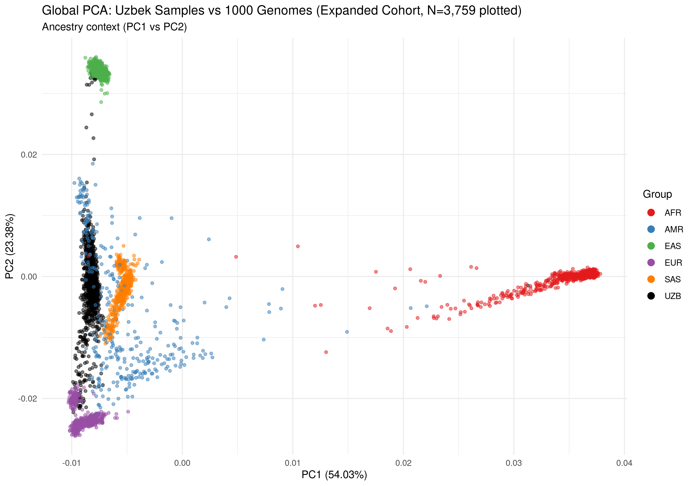
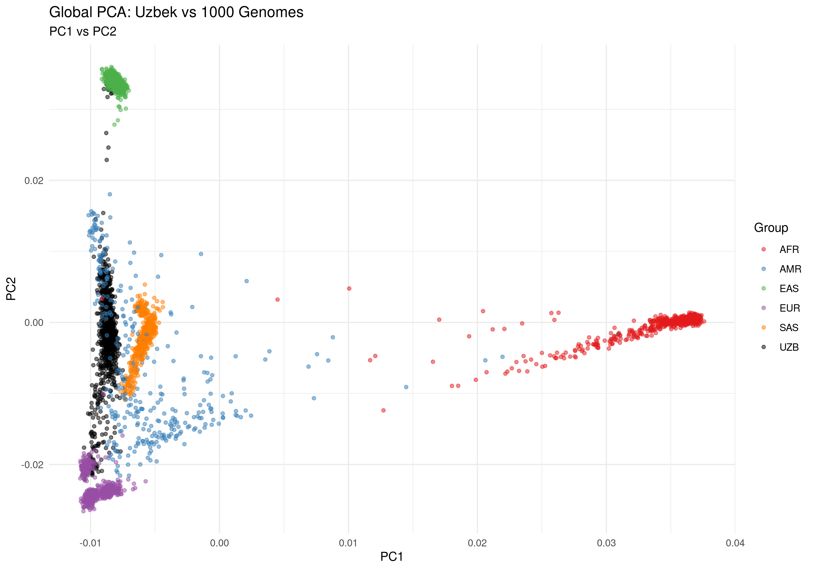
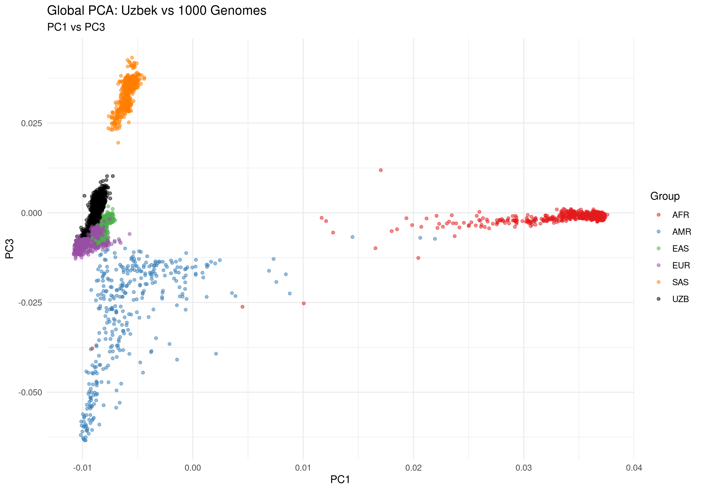
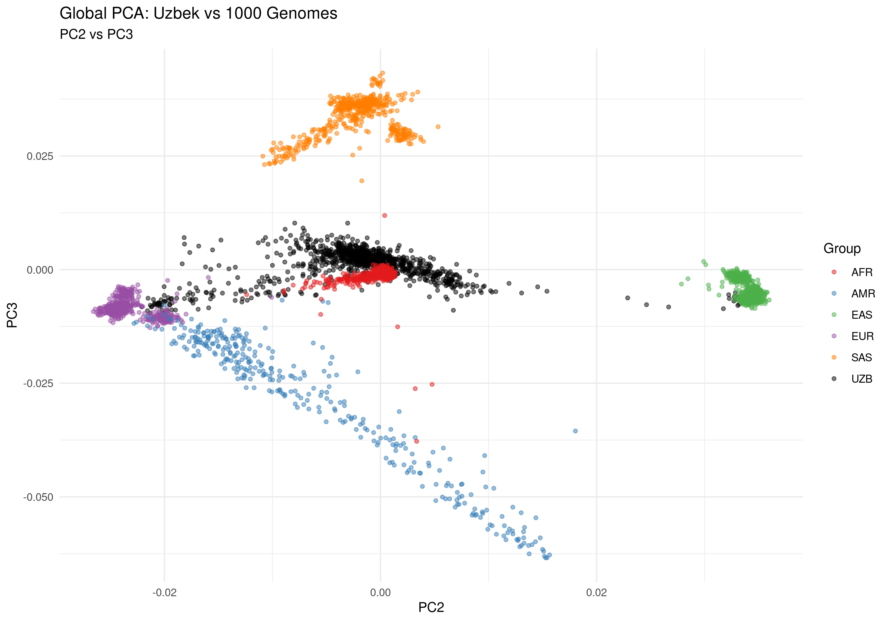
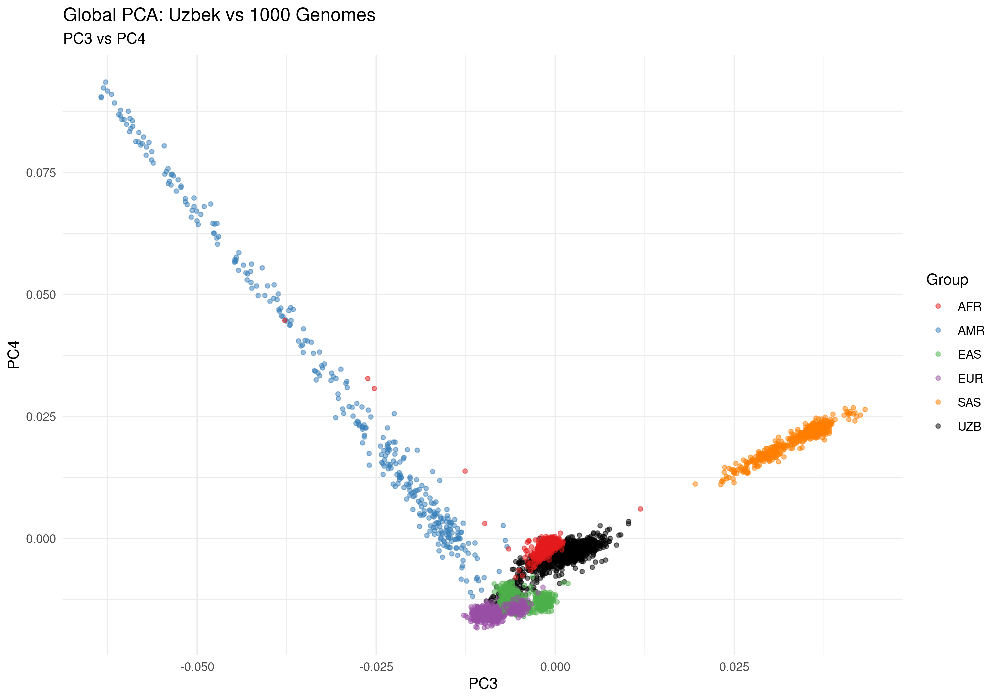
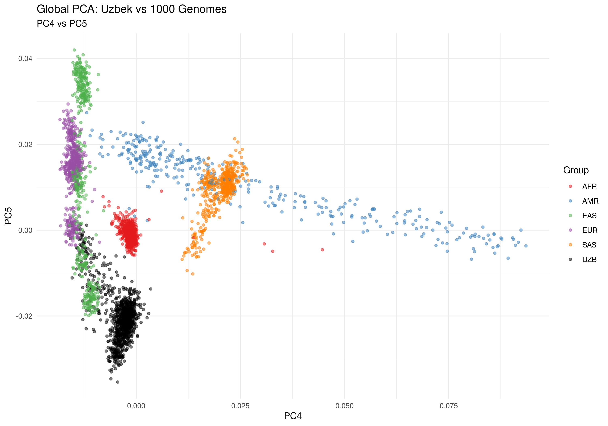

| Source |
File(s) |
Description |
| Uzbek Data |
UZB_imputed_HQ_unique.{bed,bim,fam} |
1,256 Uzbek samples, 5.36M variants (unique IDs) |
| 1000G Reference |
ALL.chr*.shapeit2_integrated_v1a.GRCh38.phased.vcf.gz |
2,548 samples across 5 superpopulations (AFR, AMR, EAS, EUR, SAS) |
| Metadata |
1000g_panel.txt |
Sample IDs, population codes, superpopulation labels |
Step 1: Extract Target SNPs from 1000G
The 1000 Genomes reference contains ~80M variants. To make the merge computationally tractable and ensure proper overlap with our imputed dataset, we extract only the SNPs present in our LD-pruned list (87.6K independent variants, expanded cohort). Because this list changes with the Uzbek cohort's own sample composition, the 1000G extraction is rebuilt fresh for each cohort version — it is not reused verbatim from the original run.
Prepare Position-Based Extraction
# Define paths
UZB_DIR="/staging/ALSU-analysis/winter2025/PLINK_301125_0312/michigan_ready_chr/imputation_results/unz/filtered_clean"
PRUNED_LIST="${UZB_DIR}/UZB_pruned.prune.in"
for chr in {1..22}; do
echo "--- Working on Chromosome $chr ---"
# Create BED file with position ranges (matching VCF naming with 'chr' prefix)
grep "^${chr}:" $PRUNED_LIST | awk -F':' '{print "chr"$1 "\t" ($2-1) "\t" $2}' > chr${chr}_targets.bed
# bcftools view -T FILE: extract variants at positions listed in BED file
# (position-based lookup — faster and more accurate than ID-based for large VCFs)
# -m2 -M2: exactly 2 alleles (biallelic) -v snps: SNPs only
# -Oz: bgzip-compressed VCF output
bcftools view -T chr${chr}_targets.bed \
-m2 -M2 -v snps \
ALL.chr${chr}.shapeit2_integrated_v1a.GRCh38.20181129.phased.vcf.gz \
-Oz -o chr${chr}_subset.vcf.gz
# Count extracted variants
COUNT=$(bcftools view -H chr${chr}_subset.vcf.gz | wc -l)
echo "Found $COUNT variants for Chromosome $chr"
done
--- Working on Chromosome 21 ---
Found 1348 variants for Chromosome 21
--- Working on Chromosome 22 ---
Found 1392 variants for Chromosome 22
Convert VCF to PLINK Binary Format
# --set-all-var-ids '@:#:$r:$a': construct variant IDs from template
# @ = chromosome, # = position, $r = ref allele, $a = alt allele
# --new-id-max-allele-len 50: truncate allele strings at 50 chars in IDs
# (prevents excessively long IDs for large indels)
# --threads 8: use 8 CPU threads for parallel processing
plink2 --vcf chr${chr}_subset.vcf.gz \
--set-all-var-ids '@:#:$r:$a' \
--new-id-max-allele-len 50 \
--make-bed \
--out chr${chr}_ref \
--threads 8
Total 1000G Variants Extracted:
83,091 (matching expanded-cohort Uzbek LD-pruned set; differs from original run's 83,664 because the LD-pruned set itself differs)
1000G Samples:
2,548 (split across 5 superpopulations)
Step 2: Merge 1000G Chromosomes
Combine the 22 chromosome-specific 1000G reference files into a single, unified dataset using PLINK's merge functionality.
# Create merge list (excluding chr1, which serves as master)
ls chr*_ref.bed | grep -v "chr1_ref" | sed 's/.bed//' > merge_list.txt
# Merge all chromosomes
plink --bfile chr1_ref --merge-list merge_list.txt --make-bed --out KG_reference_final
Performing single-pass merge (2548 people, 83091 variants).
Merged fileset written to KG_reference_final-merge.bed + .bim + .fam.
83091 variants and 2548 people pass filters and QC.
Note: No phenotypes present.
--make-bed to KG_reference_final.bed + KG_reference_final.bim + KG_reference_final.fam ... done.
Reference Dataset Ready: 2,548 1000G samples × 83,091 common variants (expanded cohort)
Step 3: Merge Uzbek Data with 1000G Reference
Merge the Uzbek imputed dataset with the 1000G reference to create a combined dataset for global PCA analysis.
plink --bfile UZB_imputed_HQ_unique --bmerge KG_reference_final \
--make-bed \
--out UZB_1kG_merged
Combined Dataset:
3,804 samples (1,256 UZB + 2,548 1000G)
Raw Merge Variants:
5,358,904 (UZB_1kG_merged, before intersection)
Variants Used for Global PCA:
83,091 (full retention of KG_reference_final sites — unlike the original run, no variants were lost extracting from the merge)
Step 4: Global PCA
Perform PCA on the merged dataset using the 83.1K common variants. This reveals how the Uzbek samples cluster relative to the five 1000 Genomes superpopulations (AFR, AMR, EAS, EUR, SAS).
plink2 --bfile UZB_1kG_merged \
--extract KG_reference_final.bim \
--pca 10 \
--out GLOBAL_PCA \
--threads 16
Start time: Thu Aug 13 01:50:37 2026
3804 samples (0 females, 0 males, 3804 ambiguous; 3804 founders) loaded from UZB_1kG_merged.fam.
5358904 variants loaded from UZB_1kG_merged.bim.
--extract: 83091 variants remaining.
Calculating allele frequencies... done.
83091 variants remaining after main filters.
Constructing GRM: done.
Correcting for missingness... done.
Extracting eigenvalues and eigenvectors... done.
--pca: Eigenvectors written to GLOBAL_PCA.eigenvec, eigenvalues to GLOBAL_PCA.eigenval.
End time: Thu Aug 13 01:50:52 2026
Step 5: Create Population Mapping & Visualization
Combine PCA results with population labels from the 1000G panel, then create a publication-quality scatter plot showing ancestry composition.
# Expanded cohort: reuse Step 10's already-corrected population mapping
# (clusters_fixed.txt) instead of rebuilding from the 1000G panel file directly —
# it already resolves the known 45-sample panel-vs-VCF discrepancy (see Step 10).
# Format: FID IID POP (UZB/AFR/EUR/EAS/SAS/AMR), 3,759 of 3,804 merged samples
# mapped (45 unmapped 1000G samples correctly excluded, not defaulted to UZB).
cp /staging/ALSU-analysis/spring2026/full_expanded_cohort/step10_pbs/clusters_fixed.txt \
pop_mapping_expanded.txt
library(ggplot2)
eigenvec <- read.table("GLOBAL_PCA.eigenvec", header = TRUE, comment.char = "")
colnames(eigenvec)[1:2] <- c("FID", "IID")
mapping <- read.table(".../step10_pbs/clusters_fixed.txt",
header = FALSE, col.names = c("FID", "IID", "Group"))
data <- merge(eigenvec, mapping, by = c("FID", "IID"))
# Merged rows: 3759 of 3804 eigenvec rows (45 unmapped 1000G samples excluded)
colors <- c("AFR" = "#E41A1C", "AMR" = "#377EB8", "EAS" = "#4DAF4A",
"EUR" = "#984EA3", "SAS" = "#FF7F00", "UZB" = "black")
eigenval <- read.table("GLOBAL_PCA.eigenval", header = FALSE)
pve <- (eigenval$V1 / sum(eigenval$V1)) * 100
ggplot(data, aes(x = PC1, y = PC2, color = Group)) +
geom_point(alpha = 0.5, size = 1.2) +
scale_color_manual(values = colors) +
theme_minimal() +
labs(title = "Global PCA: Uzbek Samples vs 1000 Genomes (Expanded Cohort)",
subtitle = "Ancestry context (PC1 vs PC2)",
x = paste0("PC1 (", round(pve[1], 2), "%)"),
y = paste0("PC2 (", round(pve[2], 2), "%)")) +
guides(color = guide_legend(override.aes = list(alpha = 1, size = 3)))
ggsave("Global_PCA_UZB_expanded.png", width = 10, height = 7, dpi = 300)
# Output: PC1 54.03%, PC2 23.38%
Visualization Complete:
- High-resolution PNG (300 dpi, 10×7 inches)
- Color-coded by 1000G superpopulation + UZB cohort
- Ready for publication or presentation
Result: Global PCA Plots
The global PCA shows where the Uzbek cohort positions relative to major continental ancestry groups. The clear separation from 1000G samples reflects the unique Central Asian ancestry of the Uzbek population. Multiple PC combinations are shown below to reveal different aspects of population structure.
Interactive Exploration: Use the
Interactive PCA Viewer to explore all PC combinations with zoom, hover, and population filtering.

Figure 1: Global ancestry analysis showing expanded Uzbek cohort (black, N=1,256) against 1000 Genomes reference populations. Superpopulations: AFR=African, AMR=American, EAS=East Asian, EUR=European, SAS=South Asian. View original 1,047-sample plot →
Detailed PC Combinations
Note: The PC1-PC2 plot above has been regenerated for the expanded cohort. The
5 additional PC-combination plots below (PC1-PC3 through PC4-PC5) have not yet been regenerated
and still show the original 1,047-sample cohort — flagged here rather than silently left
inconsistent with the page's current numbers.
Below are additional PC combinations (PC1-PC2, PC1-PC3, PC2-PC3, PC3-PC4, PC4-PC5) that capture different dimensions of genetic variation and provide a comprehensive view of population structure within the Uzbek cohort.

Figure 2a: PC1 vs PC2 - Primary population structure axes

Figure 2b: PC1 vs PC3 - Alternative ancestry dimension

Figure 2c: PC2 vs PC3 - Secondary structure patterns

Figure 2d: PC3 vs PC4 - Finer population substructure

Figure 2e: PC4 vs PC5 - Fine-scale genetic variation
Key Findings
| Finding |
Interpretation |
| Uzbek Position on PC1/PC2 |
Uzbek samples cluster distinctly, intermediate between EUR and SAS, reflecting Central Asian ancestry |
| Minimal Overlap with 1000G |
Limited admixture with major continental groups; genetically distinct population |
| Internal Cohort Structure |
Visible substructure within Uzbek samples suggests regional or family-based clustering |
| Data Quality |
Clean separation from 1000G indicates successful imputation and QC |